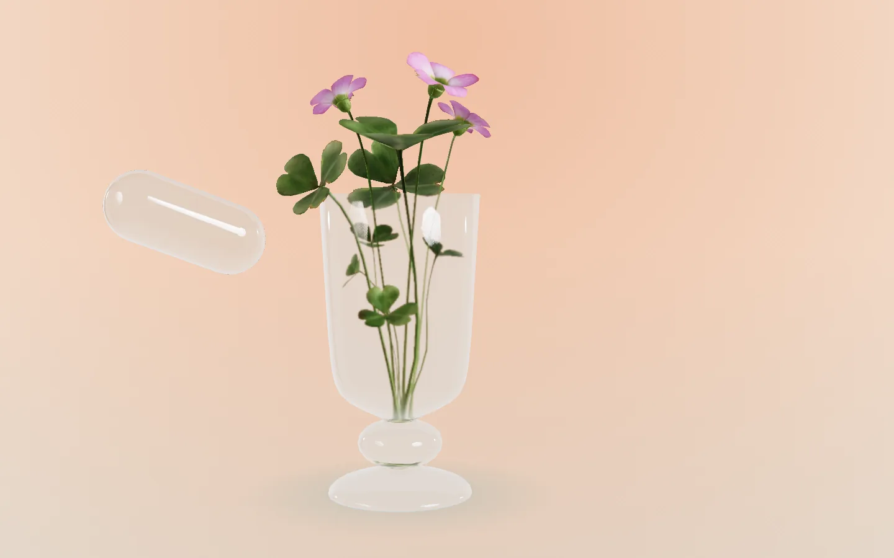

Glass over 3D
The controls see the scene.
The same kit over a live WebGL canvas: the nav, card and dock blur and bend the render under them every frame. The capsule is three.js transmission glass.
Vessel 01Concept
Glass capsule